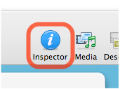

Inspector
The Inspector is used to edit a site in Sandvox. It allows you to set various properties for the current site, page and selection.
Ways to show or hide the Inspector:
-
Click the "Inspector" item in the toolbar.
 - Choose "Show Inspector" or "Hide Inspector" from the Window menu.
- Double-click a pagelet.
The Inspector is split into three segments; The Site Inspector, Page Inspector and Selection Inspector.
Site Inspector
The Site Inspector contains settings that affect the entire site.
Page Inspector
The Page Inspector contains settings that affect the page selected in the Site Outline. The top of the Inspector houses general page attributes. The bottom contains attributes specific to the type of page selected.
Selection Inspector
When you select an object on a page that has its own set of attributes (such as a pagelet), the Selection Inspector becomes available. The contents of the Inspector are completely dependent upon what is selected.
- When a pagelet is selected, the Selection Inspector is used to set the properties of the pagelet.
- When editing a Photo page, the Selection Inspector is used to set the page's photo and other properties.
- When an Embedded Image is selected, the Selection Inspector is used to set its description and position.